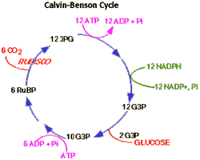

Photosynthesis Problem Set 2
Problem 2 Tutorial: Calvin cycle reactions
Which statement about carbohydrate biosynthesis during the dark reactions of
photosynthesis (i.e. the Calvin cycle reactions) is NOT TRUE?
A. RUBISCO is a an enzyme required for carbon dioxide fixation. B. NADPH is the source of electrons for glucose biosynthesis. C. ATP is the energy source for glucose biosynthesis. D. The reactions occur in the photosynthetic membranes of chloroplasts. E. Oxygen is not required.
Carbohydrate Biosynthesis

Features of the equation for dark reactions
- RUBISCO is the CO2 fixing enzyme for carbohydrate biosynthesis.
- 6 CO2 are fixed by RUBISCO per glucose synthesized.
- Oxygen is not required for carbohydrate biosynthesis.
- Remainder of reactions used to synthesize glucose and regenerate RuBP.
- NADPH is used to reduce 3-phosphoglycerate to a 3-carbon sugar. 2 NADPH are required.
- 3 ATP are required for each RuBP regenerated.
Pathway for carbohydrate biosynthesis
|
This pathway is known as the Calvin-Benson Cycle.
The reactions are catalyzed by soluble enzymes of the chloroplast stroma. The energy sources for the pathway are the NADPH and ATP produced during the light-dependent reactions of photosynthesis. |
 |


University of Arizona
Wednesday, October 2, 1996
Contact the Development Team
http://www.biology.arizona.edu
All contents copyright © 1996. All rights reserved.